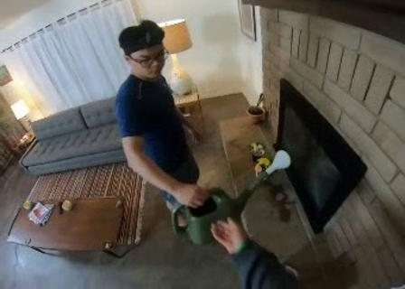

What is proactive assistance?
In proactive assistance, an agent such as a household service robot receives no explicit instruction. It watches what a person is doing and the environment they are in, decides on its own whether the person needs help, and offers that help at the right moment and in the right way.
Reactive assistance
INSTRUCTION-DRIVEN- Trigger
- An explicit instruction from the person
- Main input
- A language instruction, plus observation of the scene
- Core question
- How to carry out the instruction correctly
- Main difficulty
- Understanding the instruction and executing the action
- Evaluated by
- Whether the task gets done
Proactive assistance
OBSERVATION-DRIVEN- Trigger
- The agent decides from what it observes
- Main input
- Visual observation of the person and the scene (video)
- Core question
- Whether to help, when, why, in what way, and what to do
- Main difficulty
- Inferring intent, judging timing, and calibrating how proactive to be
- Evaluated by
- Whether the decision matches what the person actually needs
Five evaluation dimensions
We break proactive assistance into a decision chain that runs from observation to action. Each video comes with five open-ended questions, one per ability. The examples below are the reference answers for the watering can handover video.

Watering can handover, 12 s: the person holds the can out to the robot. The right decision is to reach out and take it.Core focus: the level of help
Two situations can both call for help and still need different responses. A reminder may not be enough, while acting without asking can overstep. The main ability this benchmark targets is the level of help: whether the robot chooses the right degree of initiative for the situation.
Q4 (Assistance Strategy) tests this directly. Together with Q5 (Action Selection), it determines what the robot finally does.
Remind / suggest
Give a verbal hint or suggestion and let the person do the task.
Ask before acting
Ask for the person's permission first, then act once they agree.
Take direct action
Act right away without asking, for example when there is a safety risk or the person is handing something over.
Test examples
Pick a scenario to see the reference answers for its five questions, along with the raw answers and scores from GPT-6-Astra and Qwen3-VL-8B-Instruct.
Evaluation setup
Models answer in free-form text. A judge model compares each answer with the reference for meaning and scores it from 0 to 4.
- Models tested
- GPT-6-Astra; Qwen3-VL-8B-Instruct
- Test videos
- X
- Questions
- Y
- Answer format
- Open-ended
- Judge model
- Qwen3-8B, semantic comparison against the reference answer
Results
GPT-6-Astra leads on all five dimensions and all X videos. Across the Y paired questions it wins 11, ties 7 and loses 1.
GPT-6-Astra
63 / 76Qwen3-VL-8B-Instruct
42 / 76- GPT-6-Astra leads overallMean score 3.32 vs 2.21 and score rate 82.9% vs 55.3%. It leads on all five dimensions and all X videos.
- The gap is mainly in strategy and action selectionThe mean gap is 2.25 on Q4 and 1.50 on Q5. Qwen3-VL-8B answered “no intervention” to every strategy question regardless of the scene, and it misread the scene more often in intent understanding and need reasoning.
- GPT-6-Astra mostly loses small amountsIts main weaknesses are recognising when to ask before acting, and keeping its reasoning consistent across dimensions.
- Shared weak spotsBoth models struggle to recognise hand-over intent and to tell “ask before acting” apart from the other strategies.